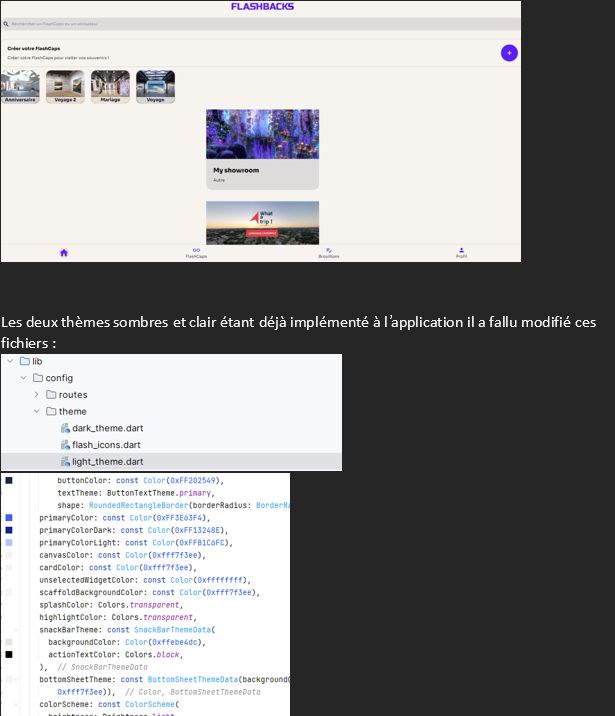
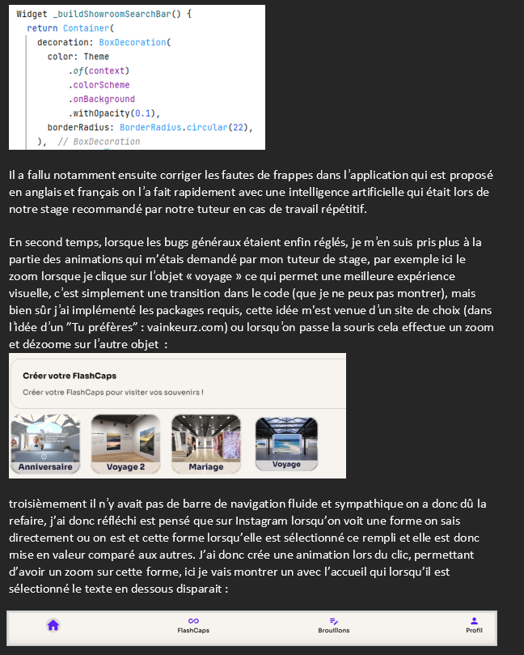

Goeasy - refonte d'une application mobile et web
Ce projet consistait à reprendre une application mobile pour la déployer sur web et refaire une refonte du site, en autonomie.
Objectifs :
Fournir une interface conviviale pour les clients pour naviguer Déployer le site sur web Intégrer une api pour automatiquement régler la taille des images Assurer la sécurité et la confidentialité des données des clients
Compétences utilisées :
Conception d'interface utilisateur Développement d'applications (Flutter, Dart, TypeScript) Gestion de base de données (MySQL) Sécurité des données Gestion de projet GithubRésultats : L'application a été livrée dans les délais impartis L'api a bien été intégré par ma camarade Le site web a été déployé par ma camarade J'ai fourni une interface conviviale pour les clients pour naviguer
Extraits de commandes
Je suis soumis à un serment de non divulgation, je ne peux donc pas montrer beaucoup
 